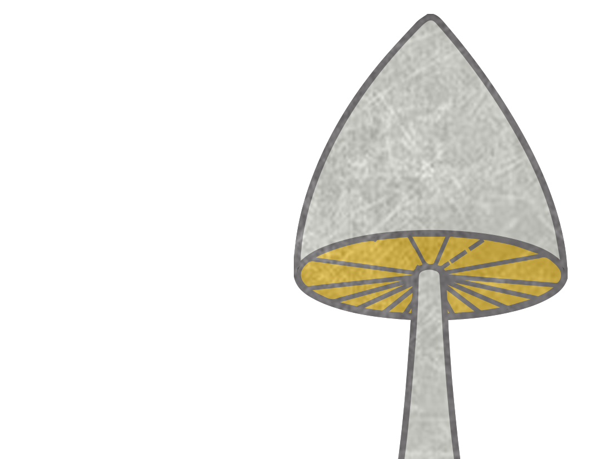

Forage was created in 2016 by Maverick Media as an online community for passionate chefs to collect and share recipes. The fundamental idea behind the app is to spread awareness of preventing food waste as this is an ever growing problem in the world today.
Unlike any other cooking apps Forage encourages our users to optimise the ingredients they through our search engine. This app is for anybody who would like to cook, whether you are an amateur or a highly trained chef our network is set up to share the creative of cooking.
Find your inner chef.
